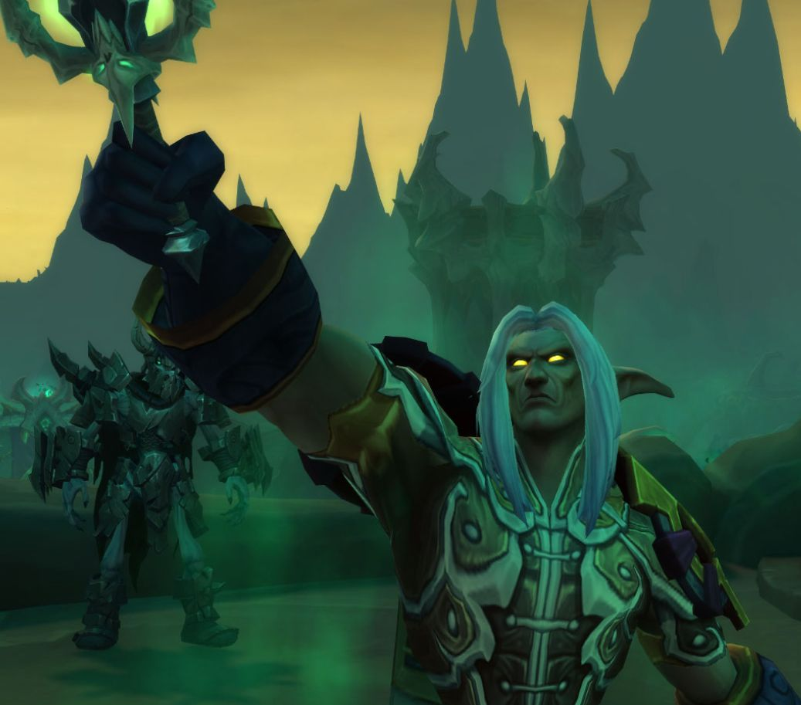

Les meilleurs addons pour WoW Forever
Leveling, carte, interface, donjons, hôtel des ventes : notre sélection des addons indispensables pour bien démarrer le 4 novembre. Tous ont déjà une version compatible Forever.

Notre sélection pour débuter
Pas besoin de tout installer ! Pour un premier personnage, ce petit kit suffit largement :
- Questie : pour savoir où aller pour chaque quête
- TomTom : pour suivre une flèche jusqu'à ton objectif
- Leatrix Plus : pour tous les petits conforts du quotidien
- Auctionator : dès que tu commences à vendre ou acheter à l'hôtel des ventes
1. Leveling et quêtes
Questie reste la référence : il place sur ta carte les donneurs de quêtes, les objectifs et les points de rendu. Ses données viennent de Classic, donc certaines quêtes propres à Forever peuvent encore manquer ou être imprécises.
Pour un leveling guidé, deux addons gratuits sortent du lot. Polestar Guides, pensé pour Forever, propose environ 220 guides (routes de leveling, classes, métiers, réputations) avec une flèche 3D. Factoruide, créé par un joueur français, calcule une route sur mesure selon ton personnage et tes métiers, puis te guide étape par étape. Les deux peuvent même fonctionner ensemble.
- Questie : les quêtes sur la carte
- Polestar Guides : des guides de leveling pas à pas
- Factoruide : une route de leveling calculée pour toi
2. Exploration et carte
TomTom est le GPS d'Azeroth : pose un point sur la carte et une flèche te guide jusqu'à lui, avec la distance restante. Il se combine parfaitement avec Questie. Leatrix Maps améliore la carte du monde : zones inexplorées révélées, icônes des donjons, coordonnées et carte redimensionnable.
- TomTom : flèche et points de passage
- Leatrix Maps : une carte du monde plus pratique
3. Interface
Pour transformer complètement ton interface, choisis l'un ou l'autre : EllesmereUI, une suite modulaire avec un éditeur visuel pour tout placer à la souris, ou Naowh Forever, une boîte à outils très complète avec journal de donjon et listes d'équipement idéal. Évite de faire gérer les mêmes barres ou cadres par deux addons à la fois. En complément, Leatrix Plus ajoute une foule de petits conforts : réparations et vente automatiques, temps de vol, prix des marchands…
- EllesmereUI : une interface entièrement personnalisable
- Naowh Forever : la boîte à outils de Naowh
- Leatrix Plus : les petits conforts du quotidien
4. Donjons
Pour préparer tes instances, DFL Dungeon Journal regroupe tous les donjons et raids de Forever : entrées, cartes, boss, butin et quêtes à prendre avant d'y aller. FojjiCore, le compagnon des WeakAuras de Fojji, ajoute lui aussi un journal de donjon, un planificateur d'itinéraire et un guide des quêtes cachées. Et pour trouver un guide écrit, jette un œil à notre page Donjons & Raids.
- DFL Dungeon Journal : le livre de tous les donjons
- FojjiCore : journal, itinéraires et quêtes cachées
5. Hôtel des ventes
Auctionator rend l'hôtel des ventes simple : prix affichés dans les infobulles, protection contre les ventes à prix cassé, coût et bénéfice de tes recettes de métiers, et listes de courses.
- Auctionator : l'hôtel des ventes facile
Comment les installer ?
Le plus simple est l'application CurseForge : choisis World of Warcraft, puis la version Forever, cherche l'addon et clique sur « Installer ». Tous les liens et les fiches détaillées sont sur notre page Addons.